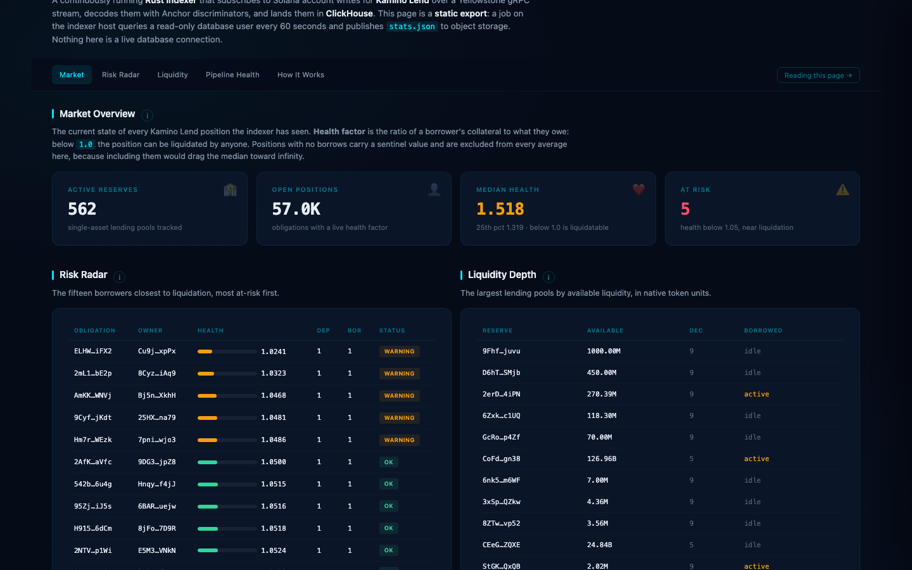
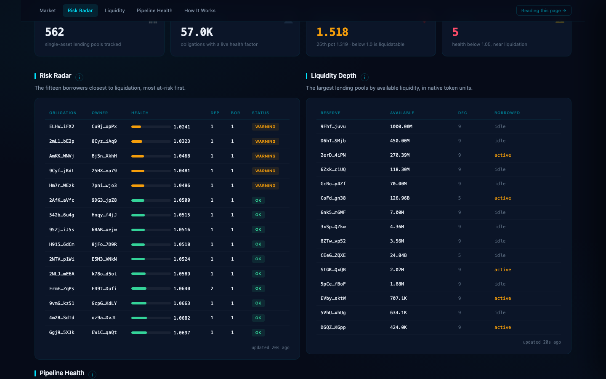

demo day · 2026-08-17
klend-indexer
A real-time indexer for Kamino Lend account state on Solana,
built for liquidation forensics.
Stephen · Rust / Solana
idea · architecture · implementation · presentation
the idea
A question no warehouse can answer.
In 2026 Kamino cut its liquidation penalty by 90 percent,
from 1 percent to 0.1 percent. What did that do to liquidators?
Public data warehouses lag Solana by minutes and flatten program
state into token transfers. No public dataset can measure the answer. So I built one.
what it is
A Rust indexer with a real dataset behind it.
It subscribes to a Yellowstone gRPC stream, decodes Kamino's lending
accounts into typed rows, and writes the full history to ClickHouse.
931,073
rows ingested
account_updates, deduped via ReplacingMergeTree
140,196
obligations tracked
56,990 currently carrying debt
9.7 days
of accumulation
Aug 5 to Aug 14, one 8h40m gap
architecture
One stream, five stages.
01
Solana validator
mainnet-beta · one slot every 400 ms · Geyser account writes
→
02
Yellowstone gRPC
owner = klend program · CONFIRMED commitment · billed by bandwidth
→
03
klend-indexer
Rust + tokio · types accounts by Anchor discriminator, then batches
→
04
ClickHouse
account_updates · ingest_checkpoint · native protocol
⇢
05
Liquidation forensics
state one slot before and after, the liquidator, the tip, the bonus
↻ on reconnect, resume from the last checkpointed slot (inclusive)
Keep every version
About 36% of updates rewrite the same account inside one slot. The key (pubkey, slot, write_version) keeps them all, because the state on both sides of an instruction is the whole product.
Store bytes, decode later
The raw payload is stored undecoded, so a decoding bug is replayable against history instead of unrecoverable. Yellowstone cannot re-serve an old slot.
Duplicates, never holes
The data batch commits before the checkpoint. A replayed insert collapses to the same row; a checkpoint ahead of its data would be a silent, permanent hole.
the numbers
Measured, not estimated.
163,378
decoded snapshots
obligation_snapshots
2 s
ingest lag now
p50 4 s · p99 34 s
7.45 KB/s
post-fix throughput
≈ $1-2 / month RPC
8.4%
slot density
166,985 of 1,987,448 slots
1.52
median health factor
5 positions below 1.05
0.02%
of RPC plan used
15,540 of 66.7M CUs
64,650
rows lost in the incident
158.9 h · 4,385 accounts
1
logged gap
8h40m · 73,873 slots
the demo
Now the live system.
A query over accumulated history, with the live stream running
alongside as proof it is real.
- Health-factor distribution — the current health of every tracked obligation; median 1.52, five at-risk.
- One obligation's history — a single account across 8.7 days: every deposit, borrow, and health change, in order.
- Ingest stats — row counts, checkpoint, and ingest lag, from the same freshness expression the watchdog acts on.
About 8.4% of slots carry any Kamino write, so a quiet live stream is
normal, not broken. The stored data carries the demo.
the war story
Throughput is not integrity.
I added an accounts_data_slice to cut bandwidth, sized for the
Reserve account. The slice is applied at the request level, and Yellowstone returns an
empty payload for any account shorter than it. Obligations are 3,344 bytes, so from
slot 437,903,892 every Obligation arrived empty. For 158 hours,
nearly six and a half days, the pipeline wrote garbage while every monitor stayed green:
the checkpoint advanced, freshness stayed at seconds, no slot was missed. The data was just gone.
I found it by auditing the data distribution, not by watching a
monitor: one account type's max slot froze while the others advanced. I removed the slice
and added a payload-shape guard, a funded account with a zero-length payload is a shape the
chain does not produce. It would have fired on the first Obligation, six and a half days
earlier. 64,650 rows lost, unrecoverable.
next
Where this goes.
- Artefact 2: a liquidation-forensics dataset from this history, the penalty-compression analysis the question opens.
- Backfill: fill the gap the slice created, plus archive backfill for any future downtime beyond the replay window.
- Observability: lag-behind-tip, reconnect rate, and a payload-shape guard already shipped.
When Kamino cut liquidation penalties 90 percent, did liquidators
leave, and what did that do to protocol health? I have the data to answer that. I do not
know the answer yet.
Q&A prep
Likely questions.
Why not just use Dune?
Dune indexes transaction traces, not decoded program account state at every slot, and it applies its own abstractions. I need raw account bytes with a (pubkey, slot, write_version) history so decode is replayable and liquidation forensics can see both sides of an instruction.
What happens on a re-org?
I subscribe at confirmed commitment and key rows on (pubkey, slot, write_version), so a re-served slot dedupes rather than corrupts. Confirmed re-orgs are extremely rare on Solana; if one happens it looks like a normal replay and the store collapses it.
What did this cost?
About $1 to $2 a month of metered RPC. The real surprise was ClickHouse Cloud at $18 a day, set by write cadence, not volume. The data is exported to Parquet before the credits lapse Aug 19.
Why Rust?
A single low-latency decode loop over a high-rate gRPC stream. Rust gives zero-copy field access over the program's own interface crate, so decoding an account is a cast, not a parse.
What was the hardest bug?
The data-slice incident. Not hard to find, but every guard was green while it destroyed data for 158 hours. It forced the lesson that a monitoring suite built from liveness signals is blind to a pipeline working perfectly and producing garbage.
appendix · offline fallback
If the venue wifi dies.

overview · liveness dot

risk view · lowest health first
A full 42-second recording lives in
demo/recording/, and a canned Parquet export is at
demo/parquet/ plus gs://klend-indexer-dashboard/klend-parquet/.
The dashboard URL is https://storage.googleapis.com/klend-indexer-dashboard/index.html.